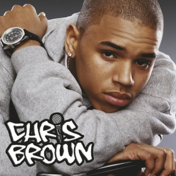

<!DOCTYPE htmal>
<htmal>
<head>
	<title> música </title>
	<meta charset = "utf-8" >
</head>
	<style>
		table,th,td{
			border: 1px solid orange;
			border-collapse:collapse;
        }
		th,td{
			text-align:left
		}
	</style>
<body style="background-color:#696969;text-align:center">
	<table style="width:100%">
	<tr>
	<th style="color:#ffffff">cantor</th>
	<th style="color:#ffffff">musicas</th>
	</tr>
	<td style="color:#ffffff">chris brown</td>
	<td style="color:#ffffff">little love,questions,run it,wall to wall</td>
	</tr>
	<tr>
	<td style="color:#ffffff" >avicci</td>
	<td style="color:#ffffff">hey brother,the nights,wake me up,x you</td>
	
	</tr>
	</table>
	<!--<ul><h3>Chris Brown </h3>
	<li><b> Don't Wake Me up</b> </li>
	<li><b>Kiss Kiss </b></li>
	<li><b>Forever</b></li>
	<li><b>Questions</b></li>
	</ul>
	<ol><h4> discografia </h4>
	<li> cd 1</li>
	<li> cd  2</li>
	<li> cd  3</li>-->
	<hr>
	<h1 style="color:ffffff;style=font-say:300%"> yo (excuse me ) </h1>
	<h2 style="color:000000;style="font-family:courier"><mark style="backgroung-color:#00ffff"> Chris Brown </mark></h2><br>
	
	<p title="letra da música" style="color:#ffffff;text-align:center">tell me fellas have you seen her (seen her)
	<br>it was about five minutes ago
	<br>when i seen the hottest chick
	<br>that young'n
	<br>never seen before
	<br>
	<br>                                                                                       
	<br>i said yo
	<br>tell her girls i want to meet her (meet her )
	<br>on a second thought that ain't the way to go
	<br>i got give her game proper 
	<br>spit it so she'll get it 
	<br>there she is I got to stop her 
	<br>
	<br>
	<br>Or should I talk about smile? (It's been said before)
	<br>Or what about her style? (too obvious)
	<br>I'm out of time
	<br>she's out the door
	<br>I got t go formine
	<br>
	<br>I think I'll say
	<br>                                                                                              
	<br>Yo
	<br>I don't know your name but excuse me miss
	<br>I saw you from across the room 
	<br>and I got to dmit that you got my attentin 
	<br>you're making me want to say yo
	<br>
	<br>I know you're tryin' to leave but excuse me miss 
	<br>I saved the last dance for you                                                                  
	<br>how i love to keep you here with me oh baby
	<br>
	<br>nowshorty grab hold of my and
	<br>and let's pretend the floor is our
	<br>you say you don't really dance
	<br>
	<br>don't worry about it
	<br>we'll just one two step
	<br>one two step
	<br>
	<br>now if the music is moving too fast (too fast)
	<br>grab my hand a little tighte (tighter)
	<br>don't be afraid to move a little closer 
	<br>girl,there is something about you that makes me want to say 
	<br>
	<br>i want to be where you are
	<br>ain't nothin' wrong with dancin'
	<br>baby you're so romantic 
	<br>baby i can be in your heart
	<br>so many things i want to tell you
	i think that i should start by sayng yo<br>
	
	
	
	
	
	
	</body>
	</html>

	
